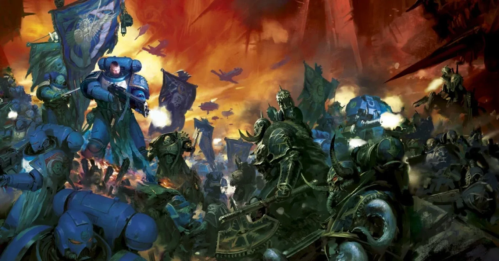
ในอนาคตอันมืดมิดของ สหัสวรรษที่ 41 มีเพียงสงคราม
เรียน Warhammer 40,000 (วอร์แฮมเมอร์ โฟร์ตี้เค) ตั้งแต่ศูนย์ — รู้จักเนื้อเรื่อง เลือกทัพที่ใช่ เข้าใจกติกาแบบเห็นภาพ แล้วลงสนามเกมแรกได้อย่างมั่นใจ
Warhammer 40K คืออะไร?
Warhammer 40,000 เป็นเกมสงครามบนโต๊ะ (tabletop wargame) ของบริษัท Games Workshop (เกมส์ เวิร์คช็อป) จากอังกฤษ ผู้เล่นสองฝ่ายนำโมเดลจำลอง (miniatures) ที่ประกอบและทำสีเองมาวางบนโต๊ะที่จัดฉากเป็นสนามรบ แล้วผลัดกันเดิน ยิง และบุกประชิด โดยใช้ตลับเมตรวัดระยะ (นิ้ว) และลูกเต๋าหกด้าน (D6) ตัดสินผล
ผู้ชนะไม่จำเป็นต้องเป็นฝ่ายที่ฆ่าศัตรูหมด แต่คือฝ่ายที่ทำ Victory Points (วิกตอรี พอยต์ — แต้มชัยชนะ) ได้มากกว่าเมื่อครบ 5 รอบ เช่น จากการยึดพื้นที่สำคัญหรือทำภารกิจสำเร็จ
กติการุ่นที่ 11 เปิดตัวเมื่อ 20 มิถุนายน 2026 พร้อมกล่อง Armageddon (อาร์มาเก็ดดอน) ที่เป็น Blood Angels ปะทะ Orks เว็บนี้สรุปตามกติกาชุดใหม่นี้ หากเคยเห็นคลิปหรือบทความเก่า รายละเอียดบางอย่างอาจไม่ตรงกันแล้ว
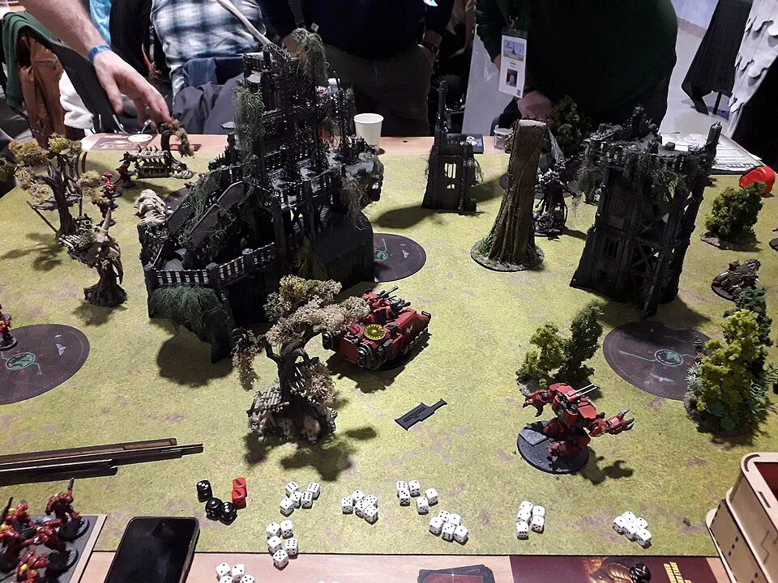
งานอดิเรกที่มี 4 มิติ
คนเล่น 40K ส่วนใหญ่สนุกกับหลายส่วนพร้อมกัน จะชอบด้านไหนมากกว่าก็ไม่ผิด
สะสม
เลือกกองทัพที่ชอบ แล้วค่อย ๆ ขยายจากกล่องเล็กเป็นกองทัพใหญ่
ประกอบ & ทำสี
ตัดชิ้นส่วนจากแผง ประกอบ และลงสีตามสีประจำทัพหรือออกแบบเอง
เล่นเกม
วางแผน วัดระยะ ทอยเต๋า — มีตั้งแต่เล่นชิล ๆ กับเพื่อนถึงทัวร์นาเมนต์
อ่านเนื้อเรื่อง
จักรวาลที่มีประวัติศาสตร์กว่า 10,000 ปีในเรื่อง นิยายนับร้อยเล่ม
เส้นทางจากศูนย์ สู่เกมแรก
อ่านเรียงตามลำดับนี้จะเข้าใจง่ายที่สุด ทุกหน้ามีปุ่ม "ถัดไป" ด้านล่าง · อ่านแล้ว 0 / 14 หน้า
เริ่มต้นต้องมีอะไร
อุปกรณ์ ชุดเริ่มต้น และวิธีเลือกทัพแรก
เนื้อเรื่องย่อ
จักรพรรดิ Horus Heresy และ Great Rift
ทัพทั้งหมด
Imperium, Chaos, Xenos และสไตล์การเล่น
พื้นฐาน & Datasheet
อ่านการ์ดยูนิต ค่าสถานะ ลูกเต๋า ระยะ
ลำดับเทิร์น 5 เฟส
สั่งการ เคลื่อนที่ ยิง ชาร์จ ต่อสู้
การโจมตี & ทอยเต๋า
Hit → Wound → Save → Damage + ตัวจำลอง
ฉาก & Objective
ที่กำบัง การซ่อนตัว และการยึดจุด
Stratagem & ความสามารถ
ใช้แต้มบัญชาการพลิกเกม
การจัดทัพ
แต้ม Detachment Leader Enhancement
รูปแบบการเล่น & ภารกิจ
Combat Patrol ถึง Strike Force
เกมแรกทีละขั้น
ตั้งโต๊ะ วางกำลัง เล่นจนจบ
ประกอบ & ทำสี
เครื่องมือและขั้นตอนทำสีพื้นฐาน
อภิธานศัพท์
ค้นหาศัพท์พร้อมคำอ่าน
แบบทดสอบ
วัดความพร้อมก่อนลงสนาม
สามขั้วอำนาจแห่งกาแล็กซี
ทุกกองทัพในเกมแบ่งได้เป็น 3 กลุ่มใหญ่ ทุกฝ่ายรบกันเองได้หมด (แม้แต่พวกเดียวกัน)
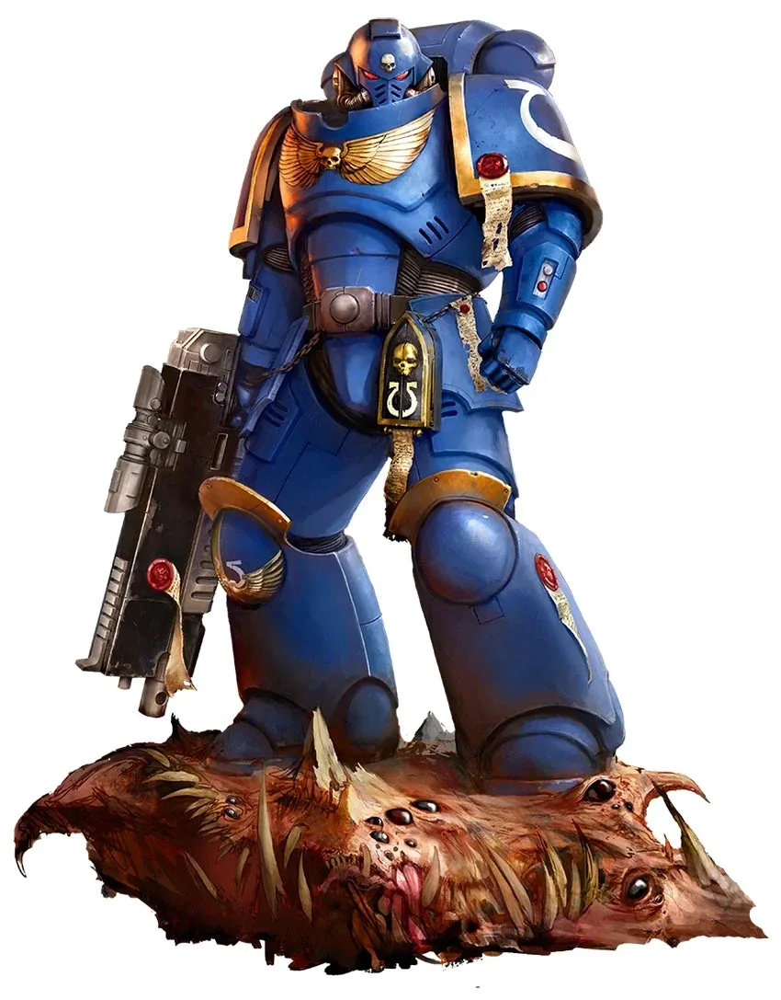
จักรวรรดิแห่งมนุษยชาติ
อาณาจักรมนุษย์ที่ยิ่งใหญ่แต่ล้าหลังและโหดร้าย ปกป้องโดย Space Marines, กองทัพมนุษย์ และหุ่นรบยักษ์
ดูทัพ Imperium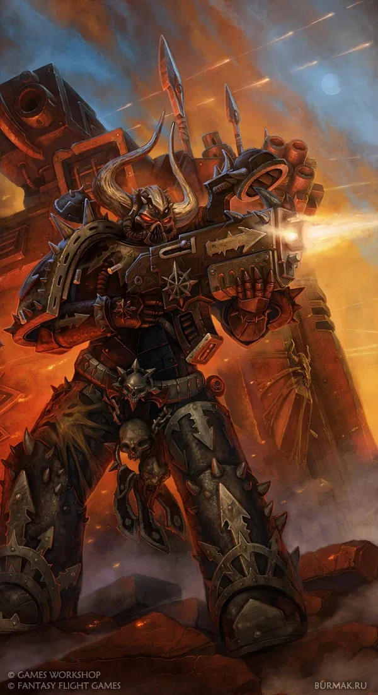
พลังแห่งความโกลาหล
ผู้ทรยศและปีศาจที่รับใช้เทพแห่ง Chaos ทั้งสี่ ต้องการทำลายจักรวรรดิที่เคยรับใช้
ดูทัพ Chaos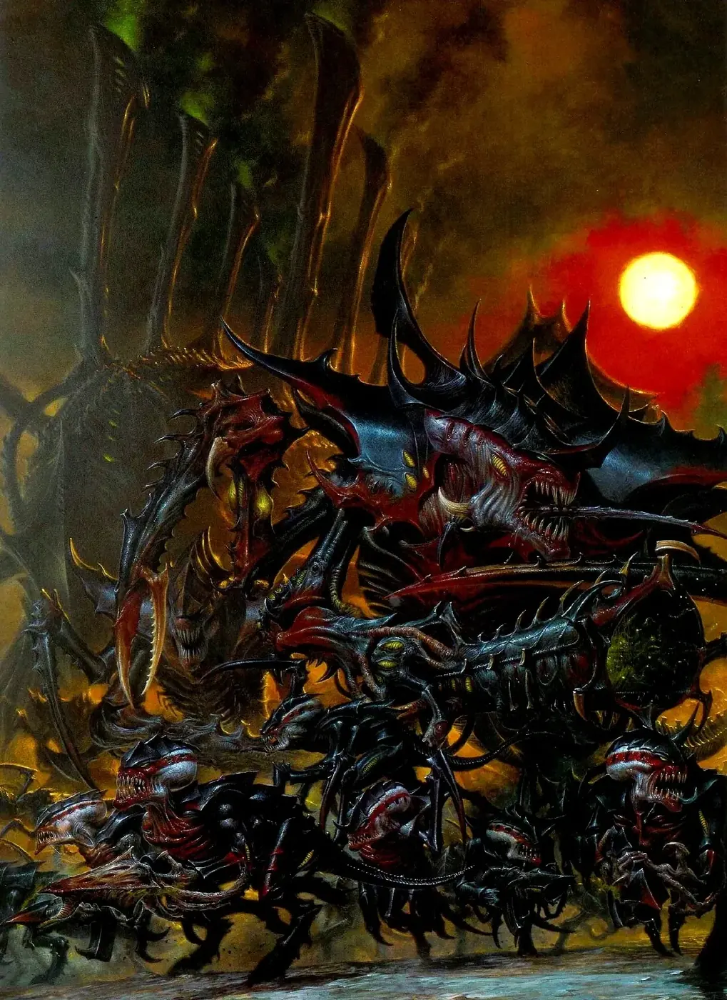
เผ่าพันธุ์ต่างดาว
ตั้งแต่ Orks ที่รักการต่อสู้ ไปจนถึงหุ่นโครงกระดูก Necron และฝูงสัตว์ประหลาด Tyranid
ดูทัพ Xenosโลกของ 40K แบบละเอียด
อ่านเนื้อเรื่องย่อแล้วอยากรู้ต่อ? เลือกหัวข้อได้เลย แต่ละหน้าแยกยุค 30K และ 40K ไว้ชัดเจน
อ่านส่วนโลกของ 40K แล้ว 0 / 7 หน้า
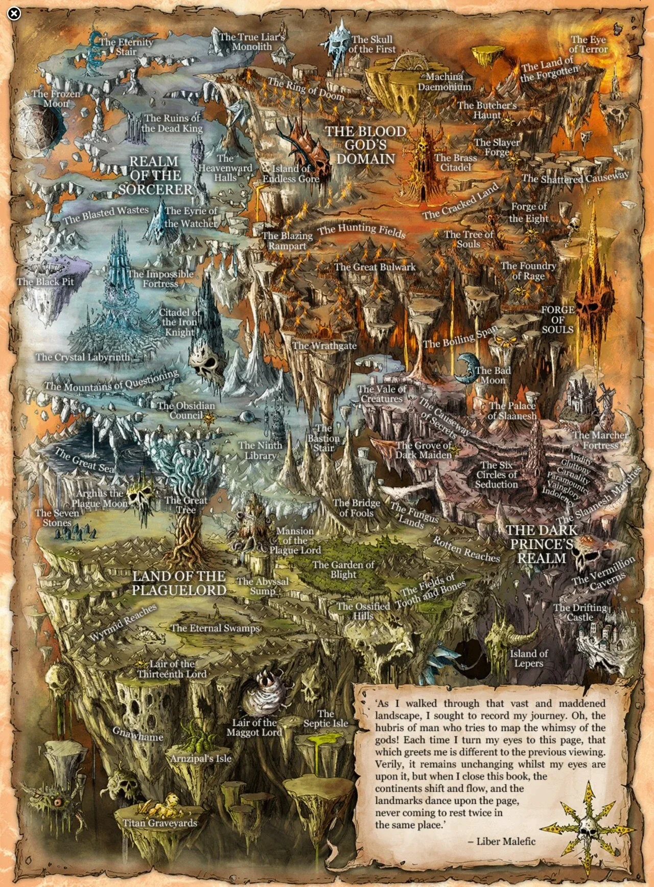
เทพเจ้าแห่ง 40K
Chaos Gods, God-Emperor, C'tan, เทพ Aeldari และ Orks
อ่านต่อ
จักรพรรดิ & Primarch ทั้ง 20
ชีวิตของจักรพรรดิและบุตรทั้ง 20 — ใครภักดี ใครทรยศ ใครยังอยู่
อ่านต่อ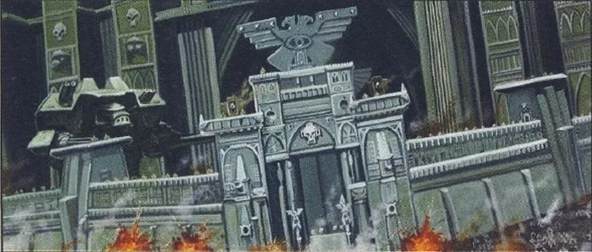
ยุค Great Crusade & Horus Heresy
ยุคที่จักรพรรดิยังเดินบนโลก และสงครามกลางเมืองที่เปลี่ยนทุกอย่าง
อ่านต่อ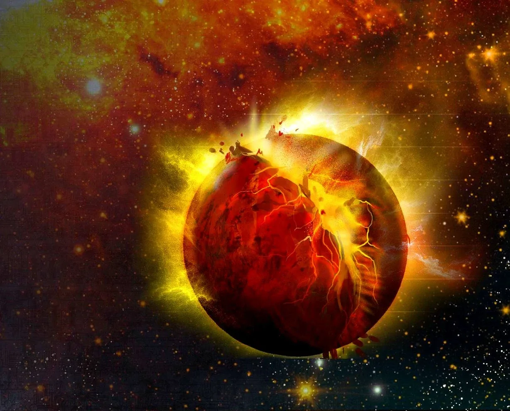
หมื่นปีหลัง Heresy
ไทม์ไลน์ถึงการล่มสลายของ Cadia และสงครามล่าสุด
อ่านต่อ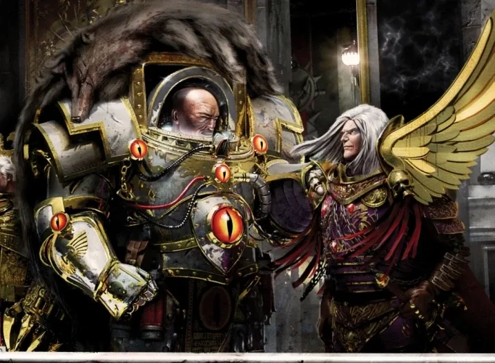
30K vs 40K
อะไรเปลี่ยนไปบ้างในหมื่นปี พร้อมภาพเทียบทุก Legion
อ่านต่อ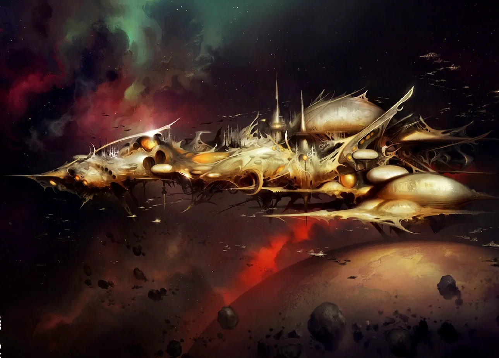
เนื้อเรื่องรายทัพ
ต้นกำเนิด วีรกรรม และเนื้อเรื่องล่าสุดของทุกทัพ
อ่านต่อ
บุคคลสำคัญ
110 ตัวละคร ค้นหาและกรองได้
อ่านต่อSpace Marine เจาะลึก
คัดคน อวัยวะ ชุดเกราะ Mark I–X และ Dreadnought
อ่านต่อ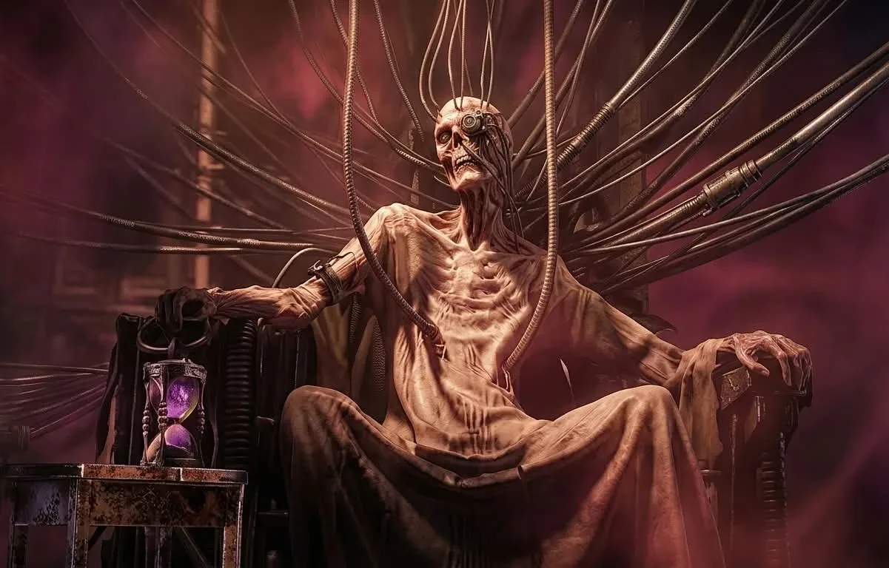
ลำดับยศทุกฝ่าย
ใครสั่งใครได้ และแต่ละตำแหน่งมีกี่คน
อ่านต่อ
เหรียญตราและเกียรติยศ
Crux Terminatus, Iron Halo, เหรียญทหาร
อ่านต่อ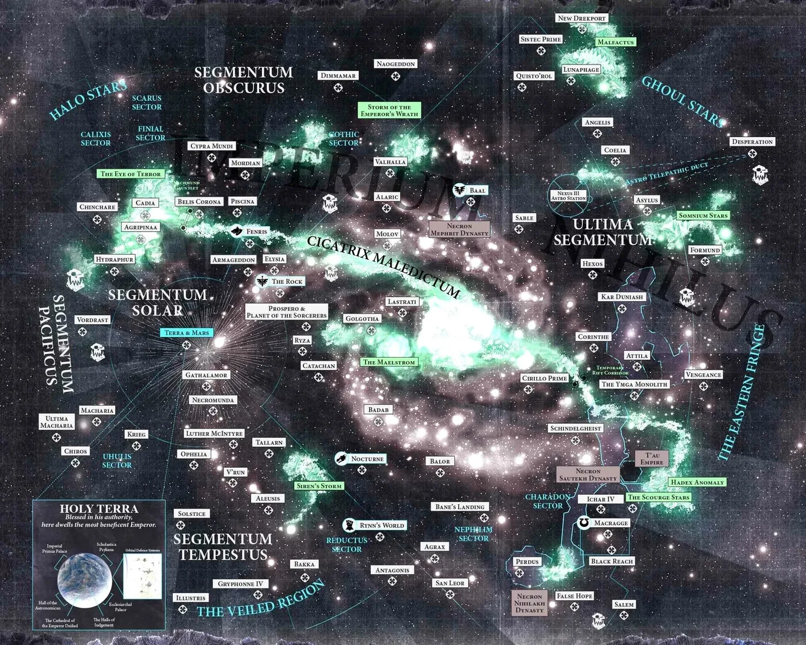
แผนที่กาแล็กซี
กดดาวเพื่อดูผู้ครอบครองและเหตุการณ์
อ่านต่อ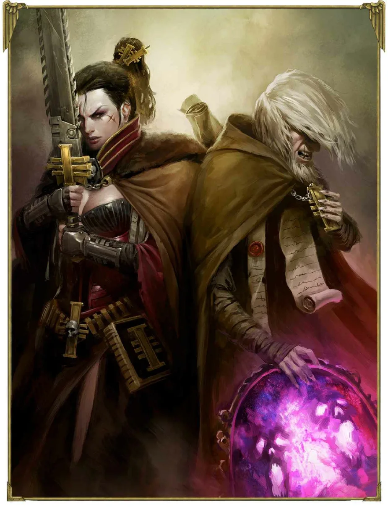
องค์กรลับและกองกำลังพิเศษ
Inquisition, Assassins, Legion of the Damned
อ่านต่อ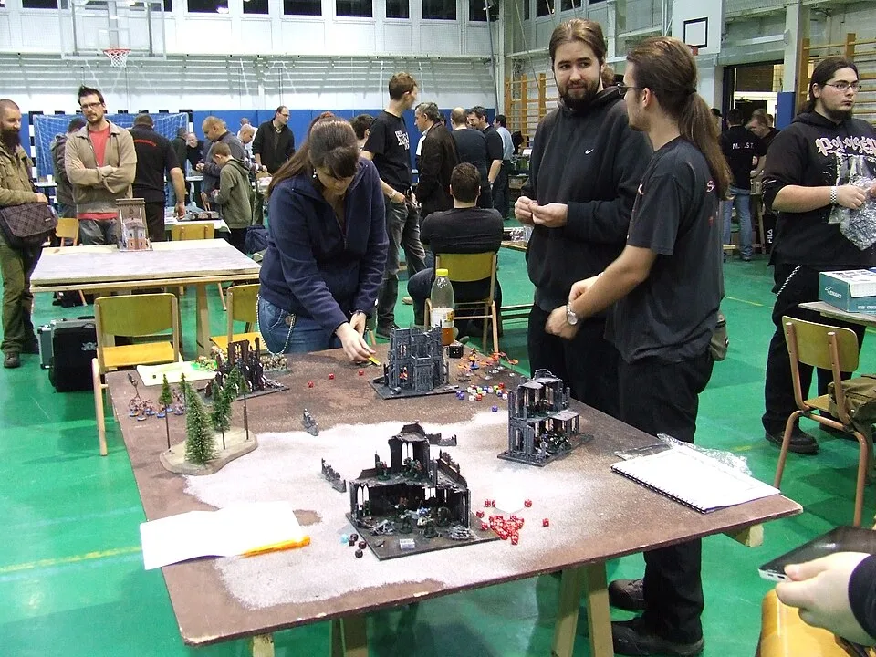
หนึ่งเกมเล่นยังไง?
- จัดทัพตามแต้มตกลงขนาดเกม เช่น 1,000 หรือ 2,000 แต้ม แล้วเลือกยูนิตให้ไม่เกินนั้น
- จัดโต๊ะ & เลือกภารกิจวางฉาก กำหนด Objective และดูว่าแต่ละฝ่ายต้องทำอะไรเพื่อได้แต้ม
- วางกำลัง (Deploy)ผลัดกันวางยูนิตในเขตของตัวเอง
- เล่น 5 รอบแต่ละรอบ ทั้งสองฝ่ายได้เล่นคนละ 1 เทิร์น แต่ละเทิร์นมี 5 เฟส
- นับแต้มใครได้ Victory Points มากกว่าชนะ (เต็ม 100 แต้มในเกมมาตรฐาน)
เครื่องมือช่วยเรียน
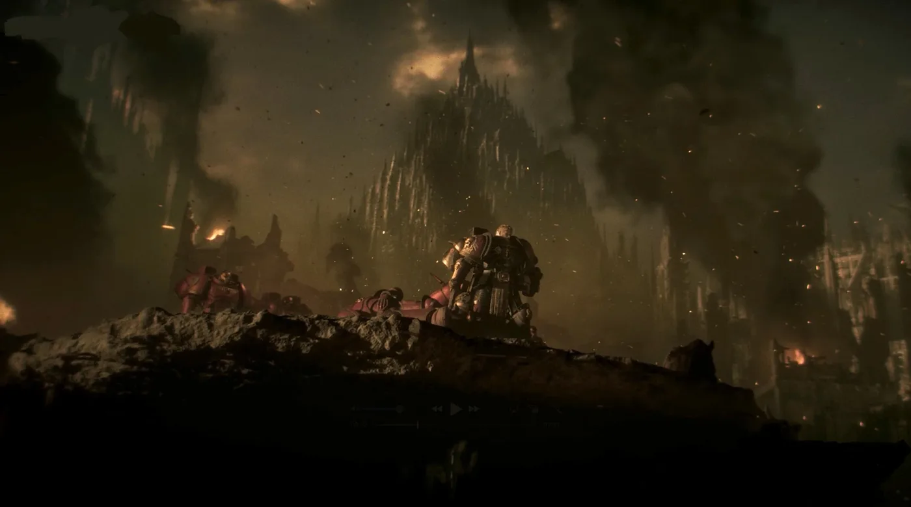
เริ่มจากหน้าแรกของเส้นทาง แล้วคุณจะเล่นเป็นภายในวันเดียว
ไม่ต้องจำทุกอย่างในครั้งเดียว — ผู้เล่นทุกคนเรียนรู้ผ่านการเล่นจริง เปิดเว็บนี้ไว้ข้างโต๊ะแล้วค่อย ๆ ดูไปพร้อมกันได้เลย